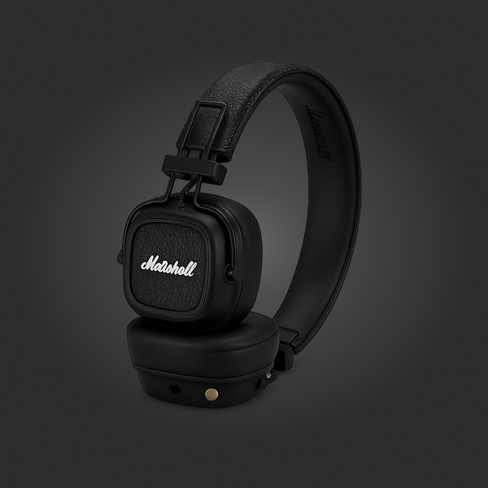
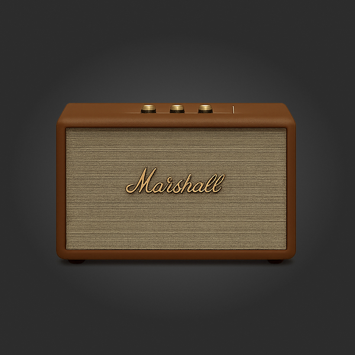
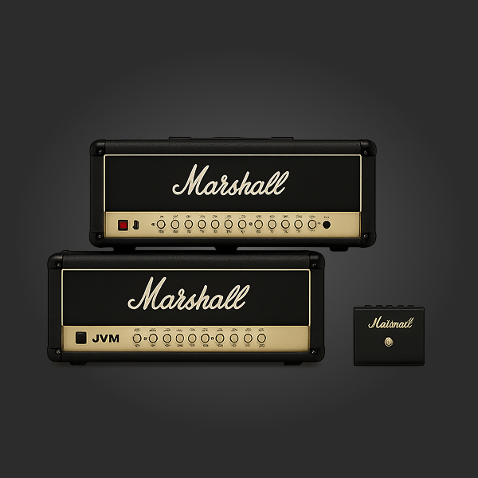
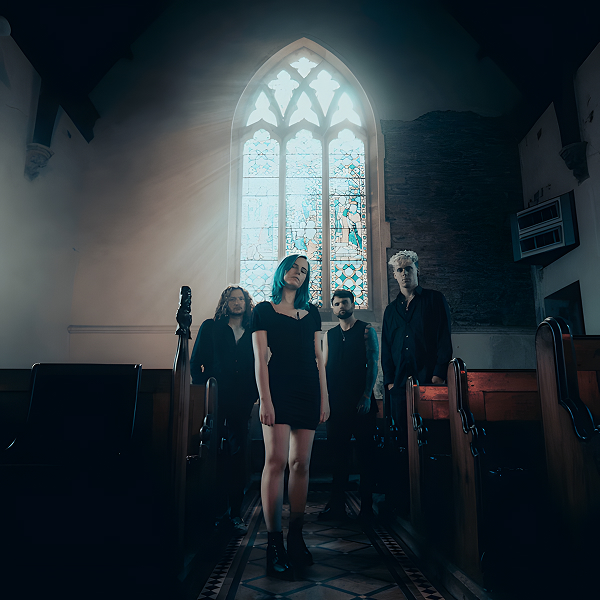
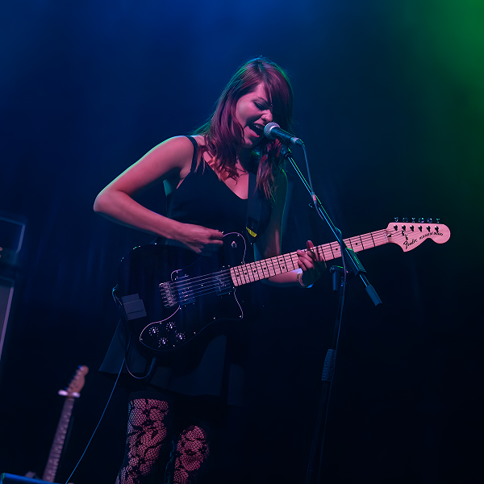
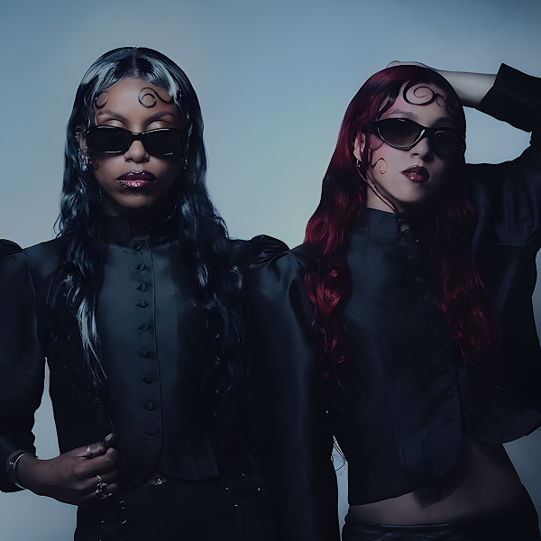

01
Personal Monitor
Headphones
Close to the mix지하철 소음 위로 올라오는 베이스라인. 귀 가까이에서 Marshall의 질감을 유지합니다.

Signal Chain
From amp to air
좋은 소리는 숫자로만 남지 않습니다. 손끝의 노브, 공기를 밀어내는 캐비닛, 공연이 끝난 뒤에도 귀에 남는 잔향까지. Marshall은 그 순간을 위해 만들어졌습니다.
기타, 턴테이블, 플레이리스트. 시작점은 달라도 목표는 같습니다.
작은 방에서도 무대처럼 느껴지는 밀도와 존재감을 더합니다.
헤드폰, 스피커, 앰프. 소리가 머무는 공간에 맞춰 출력합니다.
Gear Line
출근길, 작업실, 공연 전 리허설. 같은 로고라도 필요한 출력은 다릅니다. 장비는 장면에 맞게 고르고, 볼륨은 조금 더 올립니다.
Personal Monitor
지하철 소음 위로 올라오는 베이스라인. 귀 가까이에서 Marshall의 질감을 유지합니다.

Room System
테이블 위의 작은 무대. 플레이 버튼 하나로 공간의 온도가 바뀝니다.

Stage Origin
모든 신호의 출발점. 노브를 돌리는 순간, Marshall은 가장 익숙한 얼굴로 돌아옵니다.


짧은 리프, 긴 피드백. 공연 전 방 안의 공기를 먼저 맞춥니다.

드럼이 들어오고, 앰프가 밀어붙이고, 객석은 바로 반응합니다.

공연이 끝나도 소리는 남습니다. 귀 안쪽, 티셔츠, 다음 플레이리스트에.
무대 뒤에 쌓인 장비들. 오늘 밤의 볼륨은 거기서부터 시작됩니다.